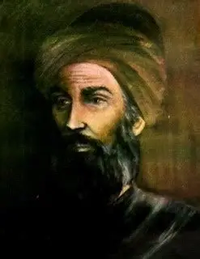

On My Way...
Welcome to the Mathematical World!
Abu al-Qāsim al-Majrīṭī
Andalusian Scholar of Mathematics, Astronomy, Alchemy, and Economics
Abu al-Qāsim Maslama ibn Aḥmad al-Majrīṭī (c. 950–1007 CE), also known in Latin as Methilem, was a prominent Muslim mathematician, astronomer, alchemist, economist, and polymath based in al-Andalus. Born in Madrid and later active in Córdoba, he served during the reign of Al-Hakam II.

Scientific Contributions
- Mathematical Astronomy: He translated and revised Ptolemy’s Planisphaerium and refined Al-Khwarizmi’s astronomical tables, adapting them for the Hijri calendar.
- Observational Astronomy: Conducted original star observations—he measured Regulus’s longitude (135° 40′) and estimated precession at ~13° 10′.
- Surveying & Triangulation: Introduced surveying methods and triangulation techniques—important advances for geographic and astronomical measurements in al-Andalus.
- Teaching & Institutional Role: Founded a school of astronomy and mathematics in Córdoba, mentoring figures like Ibn al-Saffār.
- Alchemy & Chemistry (Pseudo-Majrīṭī Works): Later works like Rutbat al-Ḥakīm ("The Sage’s Rank") and Ghayat al-Ḥakīm ("Picatrix") are likely attributed posthumously and are considered pseudepigraphical. These works include chemical experimentation, such as mercury oxide preparation, and speculative metaphysical content.
- Other Writings: Authored texts on commercial arithmetic, taxation, and the economy of al-Andalus. Edited parts of the Encyclopedia of the Brethren of Purity.
Legacy
- Regarded as the foremost mathematician and astronomer in 10th-century Iberia.
- His revisions paved the way for Andalusian scientific progress, influencing students like Ibn al-Saffār and Abu al-Salt.
- By blending theoretical astronomy and institutional teaching, he laid foundational groundwork for organized scientific inquiry in al-Andalus.
All rights reserved by the Mathematical Unity
Contact: +8801400044645
Email: mathematicalhorse1453@gmail.com
Our Discord Server: Mathematical Unity [Ulus Riyadiyat]